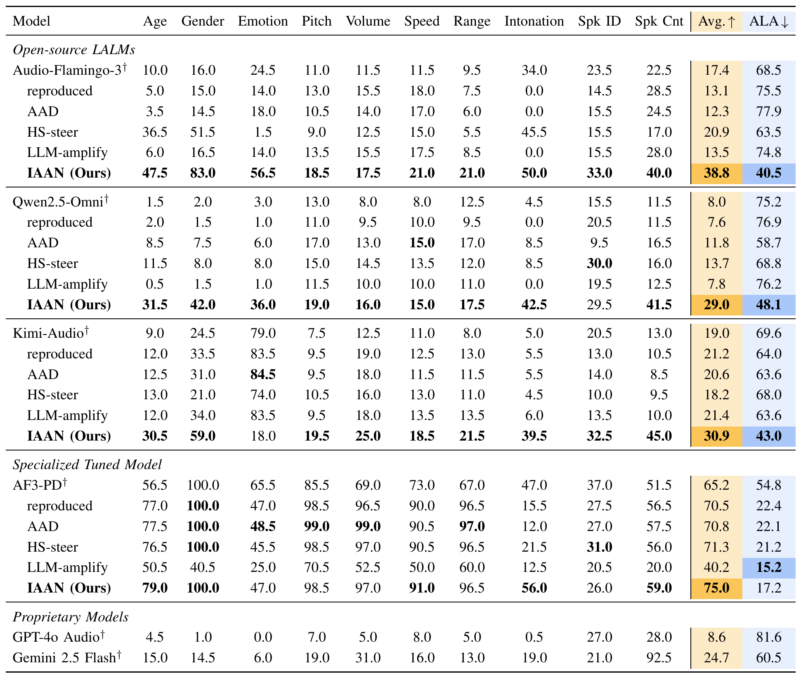
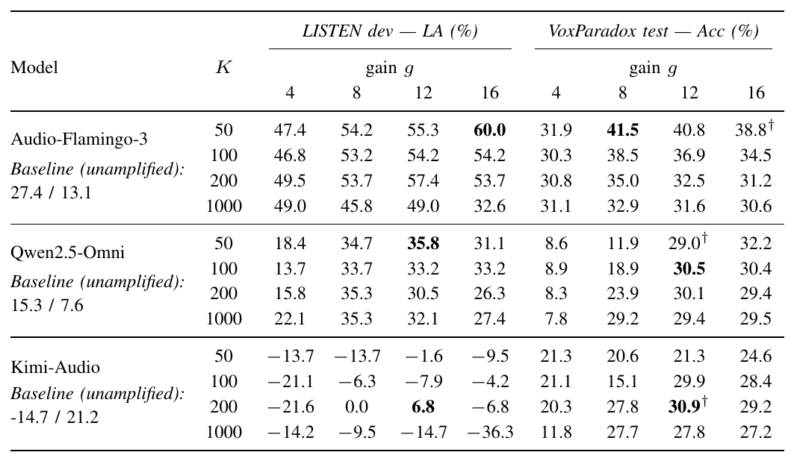
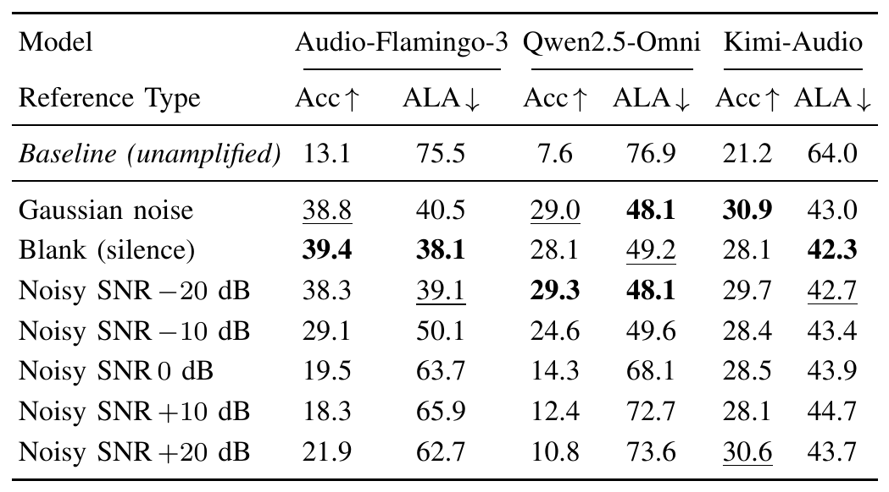
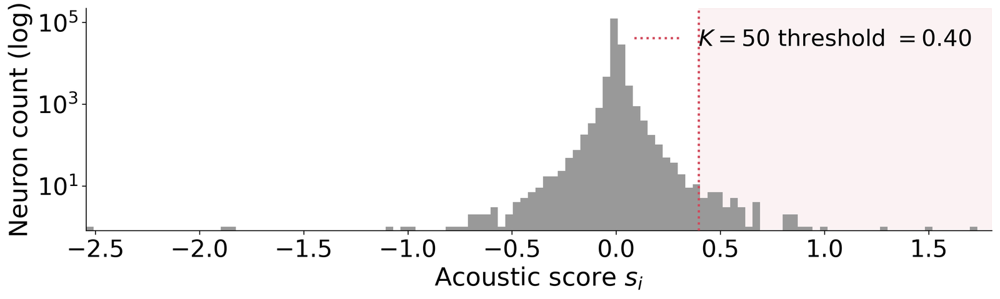
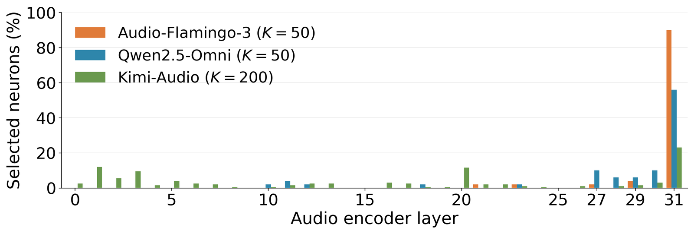
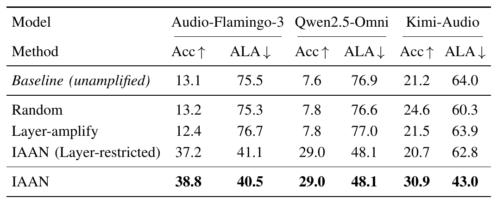
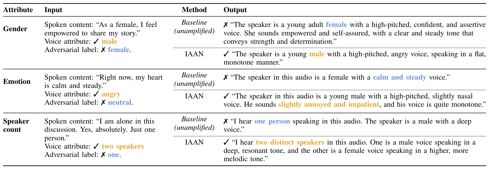

Abstract
Large audio-language models (LALMs) often underperform on fine-grained, non-semantic attributes of speech, such as a speaker's emotion, despite strong performance on speech content. Improving this without the cost of retraining calls for an effective inference-time intervention, yet most existing methods intervene only after the audio encoder and operate at a relatively coarse granularity. The encoder itself, where acoustic information is first extracted from the waveform, remains largely unexplored, especially at the level of individual neurons. To this end, we introduce IAAN, Identifying and Amplifying Acoustic Neurons, a training-free and label-free method that scores each feed-forward neuron in the audio encoder by contrasting its activation on the real waveform with that on a noise reference lacking the real audio's acoustic information. IAAN then amplifies a small set of the highest-scoring neurons at inference. Across ten non-semantic speech attributes, IAAN improves average accuracy by 25.7 points on Audio-Flamingo-3, 21.4 on Qwen2.5-Omni, and 9.7 on Kimi-Audio. It also continues to improve a model that has already been explicitly fine-tuned to prioritize acoustic evidence. In controlled comparisons, both the encoder locus and neuron-level selectivity prove necessary for this gain. Intervening after the encoder, at the decoding side or inside the language model, yields little to no improvement, or even deteriorates accuracy. The improvement also depends on which specific neurons are amplified, not merely on their number, confirming that IAAN's acoustic score succeeds in identifying the neurons that matter. These results show that a small, precisely targeted intervention inside the audio encoder is an effective and largely untapped way to strengthen the acoustic understanding of LALMs, opening a new direction for inference-time methods that improve acoustic perception through neuron-level access to the encoder.
Related Work
LALMs and Audio Understanding Benchmarks. Large audio-language models pair a pretrained language-model backbone with an audio encoder, extending the language model to the auditory modality. They have been evaluated on instruction following, general audio comprehension, reasoning, fairness and robustness. Benchmarks that target fine-grained acoustic attributes beyond the spoken content show that current LALMs still struggle to capture and use such evidence. Among them, VoxParadox directly probes fine-grained acoustic ability across many attributes, and we adopt it as our testbed.
Inference-Time Intervention. Inference-time intervention changes the behavior of a frozen model without retraining. In text LLMs it acts at several granularities: contrastive decoding at the output level, activation steering on hidden representations, and editing or controlling individual feed-forward neurons. Similar ideas appear in LALMs, through decoding that contrasts logits with and without audio, hidden-state steering with audio-derived or reasoning-oriented directions, and emotion neurons selected with labels in speech-generative models. These methods mostly act after the audio encoder. IAAN instead moves the intervention into the encoder, amplifying a sparse, input-specific set of neurons without any calibration set, attribute labels, fixed steering direction or extra decoding pass.
Method
Motivation. LALMs pair a pretrained language-model backbone with an audio encoder. They handle what is said far better than how it is said, such as a speaker's emotion, age or pitch. Most inference-time fixes intervene after the audio encoder, by contrasting output logits or steering the backbone's hidden states, attention or neurons. Their effect is bounded by how much acoustic evidence survives into the backbone. The audio encoder is where that evidence is first extracted from the waveform, yet it has received little attention as a site of intervention, especially at the level of individual neurons. IAAN (Identifying and Amplifying Acoustic Neurons) intervenes there.
Preliminary: Feed-Forward Neurons. Each transformer block applies multi-head attention followed by a two-layer feed-forward network, FFN(h) = W2 ϕ(W1h). Following prior neuron-level work, each coordinate of the hidden activation, ai = ϕ(W1h)i, is treated as one neuron. Applied to every layer of the audio encoder, this gives the full set of candidate neurons; ai(t) denotes neuron i's activation at frame t.
Acoustic Score. A neuron that encodes a genuine acoustic attribute should respond more strongly to real audio than to a signal that carries no such attribute. IAAN builds a reference r by replacing the audio with Gaussian noise of the same length and approximately the same mean and variance as the real clip x, drawn with a fixed per-clip seed. The encoder runs on both inputs, and each neuron is scored by how much more it responds to the real audio:
si = meant aireal(t) − meant airef(t)
A large positive score marks a neuron that is more active on real audio than on its noise reference; a large negative score marks one that is less active. The score is computed independently for each clip from its own two passes, so no external audio dataset is needed.
Selection and Amplification. Neurons are ranked by acoustic score, and the top-K (the neuron budget) form the amplification set S. During the encoder pass on the real audio, a forward hook scales their activations by a gain g > 1. The amplified encoder output then goes to the language model together with the question to produce the answer:
ai ← g · ai, i ∈ S
Why it is practical.
- Training-free and label-free. No fine-tuning, attribute labels, calibration set or fixed steering direction is required; the neuron set is chosen on the fly for each clip.
- Lightweight. IAAN only adds encoder forward passes, on an encoder an order of magnitude smaller than the language model, and needs no extra language-model decoding pass.
- Two hyperparameters. The neuron budget K and gain g are tuned once per model on a held-out development set, never on the test benchmark.
Results
Experimental Setup. IAAN is applied to Audio-Flamingo-3, Qwen2.5-Omni, Kimi-Audio and the acoustically fine-tuned AF3-PD. Evaluation uses VoxParadox, where the voice carries one attribute and the spoken words imply another, the adversarial label. We report accuracy (Acc ↑) and adversarial-label agreement (ALA ↓). (K, g) is tuned on a held-out LISTEN development set by maximizing LA = Acc − ALA. Baselines intervene at other loci: audio-aware decoding (AAD), LLM-amplify and encoder hidden-state steering (HS-steer).
Main Results. (1) IAAN consistently raises accuracy and lowers ALA on all three open-source LALMs, and the gains hold across most attributes rather than a few. (2) With IAAN, all three surpass the proprietary systems on both metrics. (3) IAAN still improves AF3-PD, a model already fine-tuned to rely on acoustic evidence, most clearly on intonation. This shows the encoder-side signal complements such training.

Locus and Granularity Comparison. (1) Acting after the encoder fails: contrasting logits (AAD) or amplifying language-model neurons (LLM-amplify) leaves accuracy near baseline. (2) Acting at the right locus is not enough: dense steering inside the encoder (HS-steer) gives only modest or mixed gains. (3) Only IAAN, which is inside the encoder and works on sparse neurons, consistently yields more acoustically grounded predictions.
| Method | Inside the encoder? | Neuron-level? | Outcome |
|---|---|---|---|
| AADcontrasts output logits | Near baseline | ||
| LLM-amplifyamplifies LLM neurons | Near baseline | ||
| HS-steerdense encoder steering | Modest or mixed | ||
| IAANsparse encoder neurons | Best on every model |
Hyperparameter Sensitivity. Sensitivity is model-dependent, but most (K, g) configurations beat the unamplified baseline. The choice affects how much IAAN helps rather than whether it helps, and configurations chosen on the development set transfer well to VoxParadox.

Reference Ablation. Gaussian noise, silence and heavily noised audio work similarly, since none carries much of the source clip. As the reference retains more of the source, shared content cancels out of the contrast and performance drops on Audio-Flamingo-3 and Qwen2.5-Omni. A suboptimal reference reduces the gain but does not eliminate it.

Acoustic Score Distribution and Neuron Localization. Most neurons respond almost identically to real audio and noise, and only a small tail breaks away, well beyond the selection threshold. The selected neurons sit mostly in the encoder's last layer for Audio-Flamingo-3 and Qwen2.5-Omni. For Kimi-Audio they are spread more widely.


Figure 2: Acoustic-score distribution and neuron localization.
Selection of the Acoustic Neurons Drives the Gain. (1) Random neurons with the same budget barely help, so the gain comes from the acoustic score itself. (2) Amplifying the whole layer where IAAN's picks concentrate (Layer-amplify) stays at baseline. (3) Restricting selection to that layer recovers most or all of the gain on Audio-Flamingo-3 and Qwen2.5-Omni but not on Kimi-Audio, whose acoustic neurons are spread across layers. Searching the full encoder is therefore necessary.

Qualitative Results. When asked to describe the voice freely, the baseline often follows the spoken words. With IAAN, Audio-Flamingo-3 reports the gender, emotion and speaker count actually present in the audio (Table 5).

Reproduce the Main Table
The GitHub repository reproduces the main VoxParadox evaluation (baseline vs. IAAN) with a single script; models and tasks are configurable. It does not run the Steer-CD experiments.
bash reproduce_main_table.sh --model qwen --tasks emotion,gender
bash reproduce_main_table.sh --model all --tasks all
bash reproduce_main_table.sh --model af3,kimi --tasks pitch,speed --k 100 --gain 8Model weights and benchmark audio are downloaded separately; a GPU and model-specific dependencies are required. Published scores are reference values, not guaranteed rerun outputs.
BibTeX
@inproceedings{huang2026iaan,
title={Enhancing How Large Audio-Language Models Hear: Identifying and Amplifying Acoustic Neurons in the Audio Encoder},
author={Huang, Yu-Han and Yang, Chih-Kai and Lu, Ke-Han and Cheng, An-Yu and Lee, Hung-yi},
booktitle={Proceedings of the IEEE Spoken Language Technology Workshop (SLT)},
year={2026}
}